Projeto de GDIC, apresentação em 19/11/2026. Versão de 14/11/2026, para o grupo revisar.
A base: vendas semanais de 45 lojas e 81 departamentos do Walmart, de fevereiro de 2010 a outubro de 2012 (143 semanas, 421.570 linhas, US$ 6,74 bilhões), com tipo e tamanho da loja, temperatura, combustível, CPI, desemprego e promoções (MarkDowns).
Os quatro filtros do topo valem para todos os gráficos do dashboard ao mesmo tempo, e são os mesmos nos três.
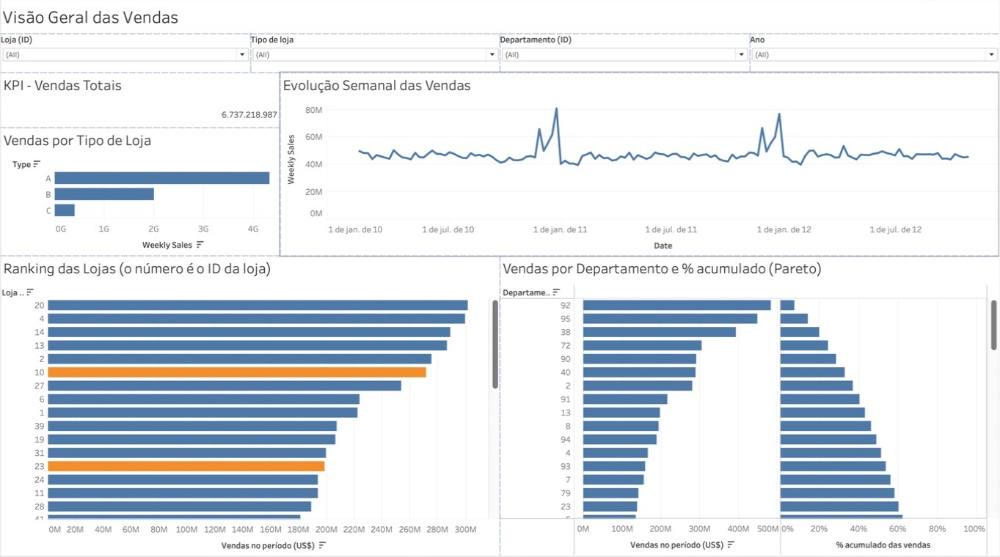
Responde "quanto e quem vende". Os três gráficos de cima são os do Victor (KPI, tipo de loja e evolução semanal). Embaixo, o ranking das lojas e o Pareto dos departamentos, que têm rolagem dentro do dashboard.
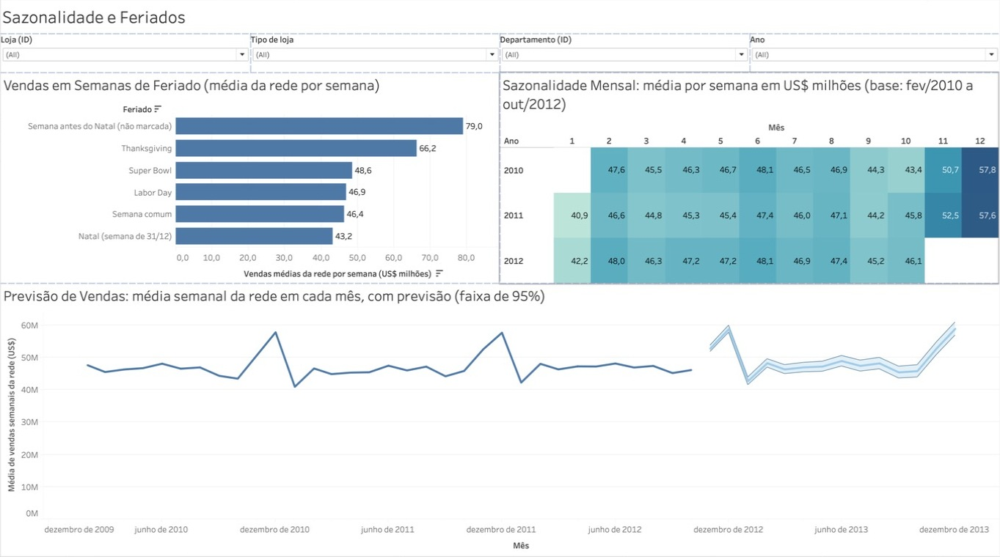
Responde "quando se vende". Feriados, mapa de calor por mês e ano, e a previsão.
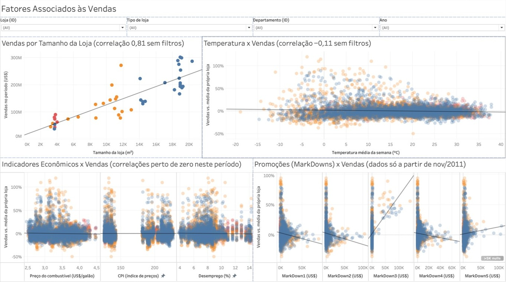
Responde "o que acompanha as vendas". Tamanho da loja, temperatura, indicadores econômicos e promoções. É análise exploratória: mostra associação, não causa.
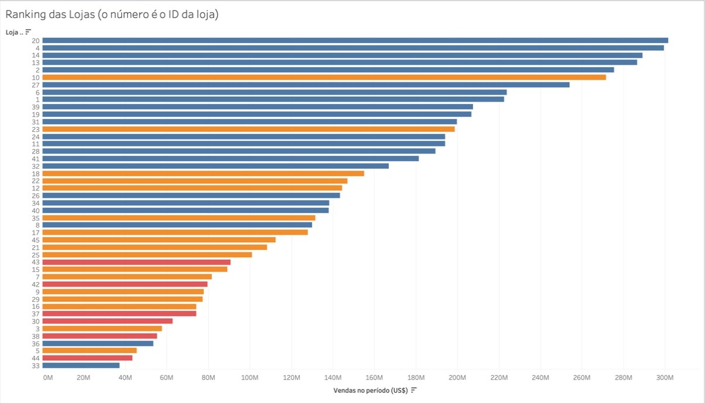
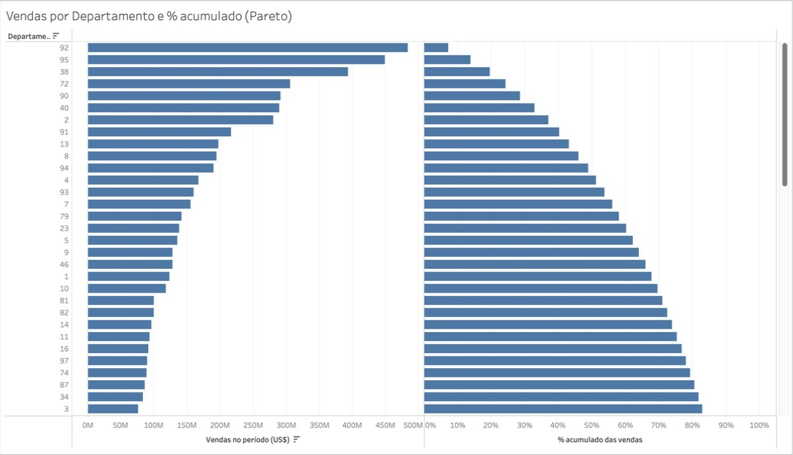
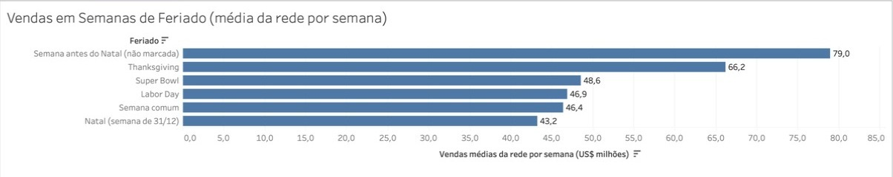
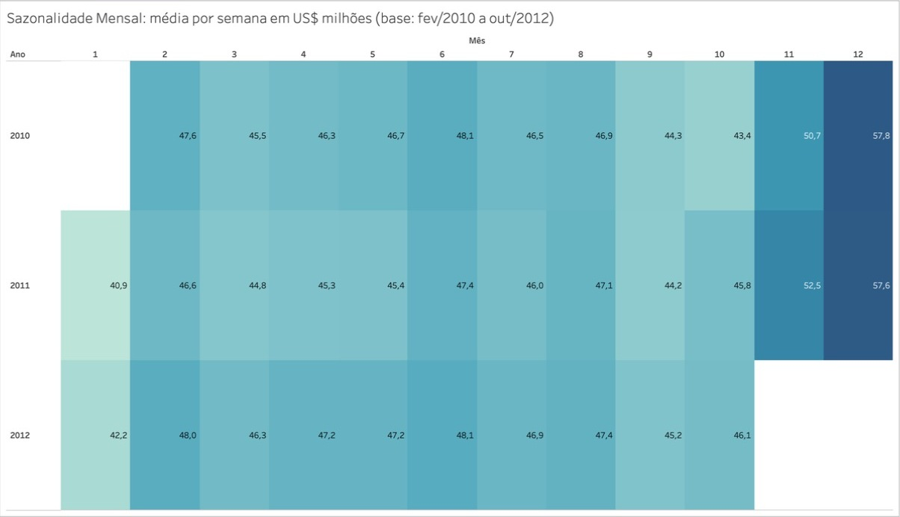
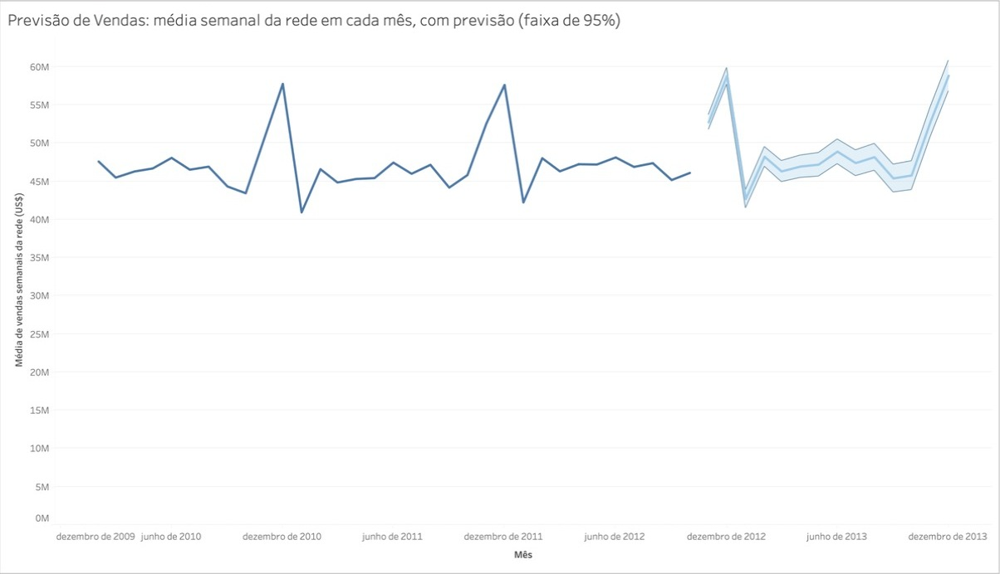
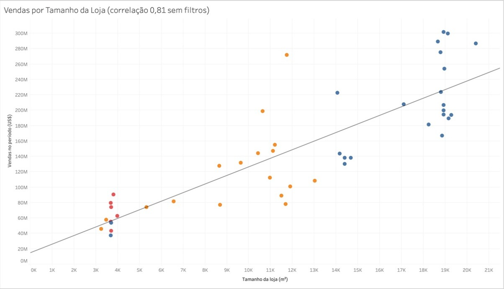
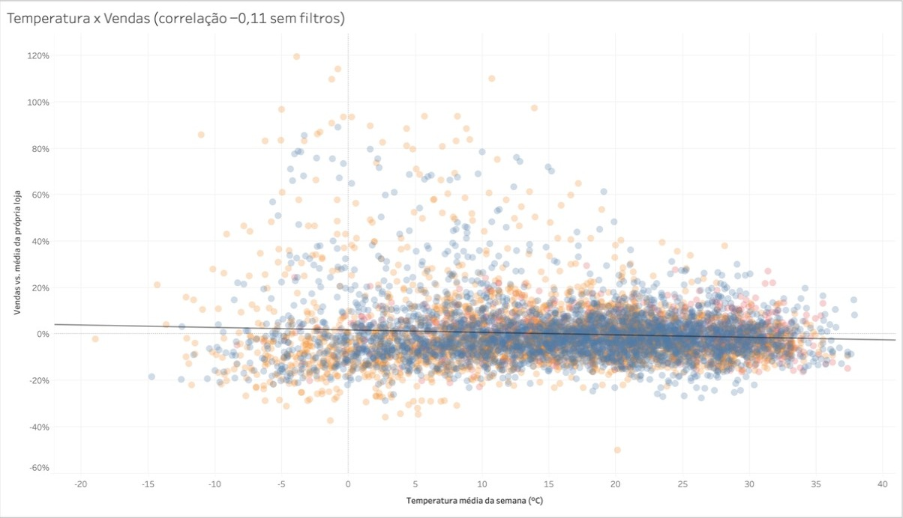
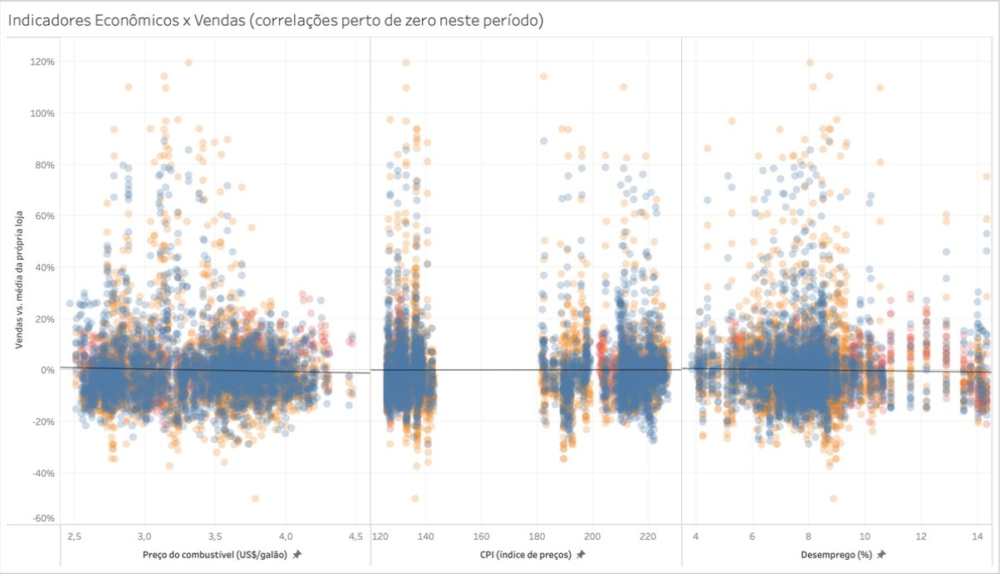
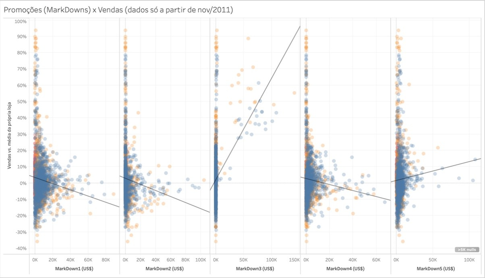
A dúvida surgiu por causa da categoria "Semana antes do Natal (não marcada)". Ela é só um agrupamento das semanas que já existem na base, feito pela data: as semanas de 24/12/2010 e 23/12/2011. As vendas são as da base. O que é nosso é o rótulo, e por isso ele diz "não marcada": a coluna de feriado da base não marca essas semanas. Sem esse agrupamento, a maior semana do ano ficaria escondida dentro de "semana comum".
A base começa em fevereiro de 2010 e termina em outubro de 2012. Então 2010 não tem janeiro e 2012 não tem novembro nem dezembro. O que fizemos:
A ideia é contar como um cientista de dados contaria: uma pergunta, o que os dados permitem responder, o que eles não permitem, e o que se faz com isso. Dá uns 6 a 8 minutos. O texto está em tom de fala; adapta para o teu jeito.
A história em uma frase: o tamanho da loja explica quanto cada loja vende, o calendário explica quando a rede vende mais, e clima, economia e promoção não explicam quase nada neste período.
São três planilhas: KPI - Vendas Totais, Evolução Semanal das Vendas e Vendas por Tipo de Loja.
Uma coisa só: cada uma das três recebeu os quatro filtros compartilhados (loja, tipo de loja, departamento e ano), todos em "tudo selecionado". Sem isso, os filtros do dashboard não valeriam para elas.
A aparência não mudou: mesmos campos, mesmo tipo de gráfico, mesmas cores, mesmos títulos e mesmos números. O arquivo original dele está guardado sem alteração em tableau/original-victor.twb.
Além disso, as três foram colocadas no dashboard "Visão Geral das Vendas", ao lado do ranking e do Pareto.
| Planilha | Sugestão | Por quê |
|---|---|---|
| KPI - Vendas Totais | Mostrar como "US$ 6,74 bi", com fonte grande e centralizada | Hoje aparece 6.737.218.987, pequeno e no canto direito, sem moeda. É o número de abertura da apresentação. |
| Evolução Semanal | Trocar os títulos dos eixos "Weekly Sales" e "Date" por "Vendas semanais (US$)" e "Semana" | Os outros gráficos estão em português e com unidade. |
| Evolução Semanal | Anotar os picos (Thanksgiving e semana antes do Natal) | É o gancho da narrativa: os picos aparecem aqui e são explicados no dashboard 2. |
| Vendas por Tipo de Loja | Trocar "Type" por "Tipo de loja" e "Weekly Sales" por "Vendas no período (US$)" | Mesmo motivo. O eixo hoje mostra 0G a 4G, sem dizer que é dólar. |
| Vendas por Tipo de Loja | Usar as cores azul, laranja e vermelho para A, B e C, e mostrar o percentual na barra (64%, 30%, 6%) | São as mesmas cores dos outros gráficos, e o percentual é o insight. |
Se ele topar, dá para aplicar em poucos minutos, por ele no Tableau ou pelo gerador do repositório.